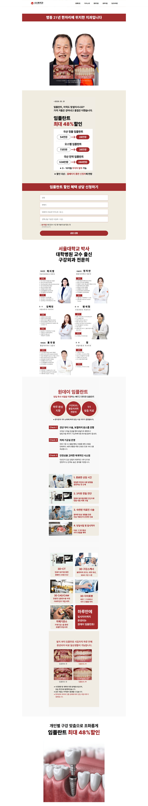
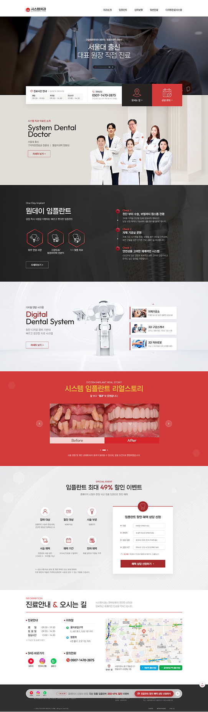
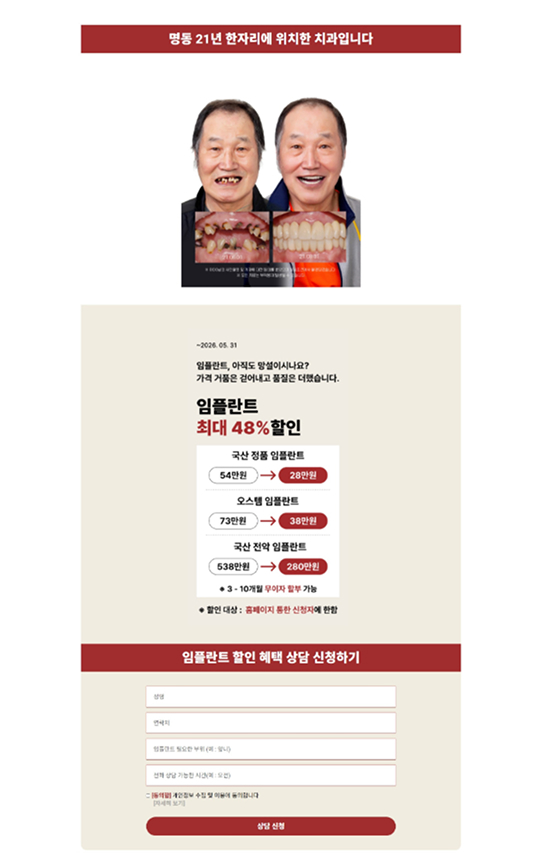
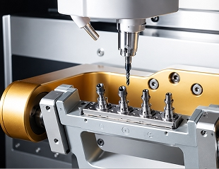
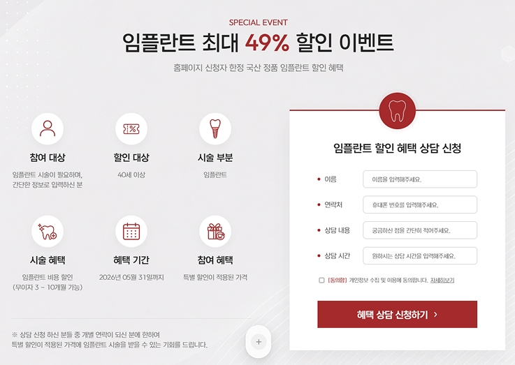

1 Problem 01
Project Summary
가격이 아닌 신뢰를 전하는
가격이 아닌 신뢰를 전하는
시스템치과 UI/UX 리뉴얼
21년 운영된 시스템치과의 온라인 경험을 분석해,
브랜드 신뢰를 높인 UX/UI 리디자인 프로젝트입니다.
50%
기획
UX · 정보 구조 · CTA 개선
20%
디자인
UI 디자인 · 프로토타입
30%
퍼블리싱
HTML · CSS · JS 구현

AFTER

Why This Project
병원의 경쟁력은 충분했지만
병원의 경쟁력은 충분했지만
온라인 경험은 그렇지 못했습니다.
시스템치과는 21년 이상 운영된 치과로 풍부한 진료 경험과 다양한 콘텐츠를 보유하고 있었습니다. 하지만 홈페이지에서는 그 강점이 효과적으로 전달되지 않았고, 사용자가 신뢰를 형성하기 어려운 구조였습니다.
21년
한자리에서만 21년
경력의 치과 노하우
0.1%
O사 임플란트
최다식립지표 최상위권
4+
서울대 출신
치과 전문 의료진
Problem Discovery
강점은 분명했지만
강점은 분명했지만
사용자는 그것을 발견하기 어려웠습니다.

2 Problem 02
신뢰 형성 요소 부족
3 Problem 03
CTA 설계 부족
4 Problem 04
시각적 피로도 증가
5 Problem 05
정보 구조 혼선
Information Architecture
사용자 중심으로
사용자 중심으로
정보 구조를 재설계했습니다.
Before · 기존 구조
임플란트
치과소개
일반진료
심미보철
밀크네이트
After · 개선 구조
치과소개
임플란트
심미보철
일반진료
디지털 진료 시스템
User Journey
신뢰 형성에서
신뢰 형성에서
예약까지의 흐름 설계
01
브랜드 신뢰 형성
02
전문성 확인
03
진료 정보 탐색
04
디지털 진료 시스템 확인
05
상담 예약
Page Restructuring
자극적인 콘텐츠를
자극적인 콘텐츠를
안정적이고 신뢰감 있게

STEP 01 — Information Architecture
사용자 중심으로
다시 짠 정보 구조
전문 분야 위주의 메뉴를 사용자 언어로 바꾸고, 흩어져 있던 장비 콘텐츠를 ‘디지털 진료 시스템’으로 통합했습니다. ‘임플란트 → 심미보철’처럼 기능적 가치와 전문성이 함께 전달되도록 메뉴를 재구성했습니다.
STEP 02 — Content Strategy
결과 사진에서
과정의 신뢰로
전후 사진·할인 중심의 콘텐츠를, 서울대 출신 의료진·디지털 장비·진료 프로세스 중심으로 전환했습니다. AI로 수술 모션 영상과 장비 이미지를 제작해 더 전문적이고 신뢰감 있는 콘텐츠를 구성했습니다.

STEP 03 — User Flow & CTA
신뢰 형성에서
예약 전환까지 하나의 여정
병원 소개 → 의료진 신뢰 → 진료 강점 → 디지털 장비 → 환자 안심 콘텐츠 순으로 배치하고, 마지막에 상담 예약 CTA를 연결했습니다. 단순한 정보 나열이 아닌 ‘신뢰 → 전환’의 사용자 여정으로 설계했습니다.
Before & After
전략에 생성형 AI를 더하다.
생성형 AI(Midjourney, ChatGPT 등) 이미지·영상을 통해 고급스러운 디자인을 보완했습니다.
Midjourney
ChatGPT
Design System
일관된 신뢰를 위한 시스템
Color System
Primary — 브랜드 · 주요 액션
#A12D2E
Burgundy버튼 · 강조 · CTA
신뢰감 · 전문성
신뢰감 · 전문성
Supporting / Tertiary
Typography — A2Z
Aa 가나다
ThinLightRegularMediumSemiBold
HERO · SemiBold 600시스템치과
TITLE · Medium 500가격이 아닌 신뢰를 전하는
BODY · Regular 400가독성과 전문성을 고려한 통일 타이포그래피
Components
상담 신청
더 알아보기
자세히 보기
Button · Primary / Secondary / Ghost
진료 안내임플란트 · 교정 · 일반진료
Card · radius 2
상담 신청하기 →
CTA · 상담 전환
Icon · 24px stroke
Development
기획부터 디자인,
기획부터 디자인,
퍼블리싱까지 직접 진행했습니다.
Figma
Photoshop
Illustrator
VS Code
GitHub
Claude Code
기획→
디자인→
퍼블리싱→
배포→
제안
Expected Impact
병원의 브랜드 경쟁력을
병원의 브랜드 경쟁력을
온라인에서도 전달할 수 있도록
IMPACT 01
브랜드 신뢰도 향상
IMPACT 02
정보 탐색 효율 향상
IMPACT 03
모바일 UX 개선
IMPACT 04
상담 전환 구조 최적화
IMPACT 05
브랜드 이미지 강화
Retrospective
좋은 의료 웹사이트는 많은 정보를 보여주는 것이 아니라, 사용자가 신뢰를 형성하는 과정을 설계하는 것이었습니다.
또한 UX는 화면을 꾸미는 작업이 아니라, 비즈니스 목표와 사용자를 연결하는 구조라는 점을 경험했습니다.